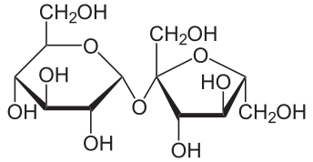
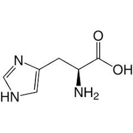

Monosacáridos: Estructura y Función
Características Principales
- Fórmula molecular general: (CH2O)n, donde n ≥ 3
- Son los carbohidratos más simples (no se pueden hidrolizar)
- Tienen sabor dulce
- Son solubles en agua
- Pueden actuar como agentes reductores
- Presentan isomería óptica debido a sus carbonos quirales
La estructura lineal de los monosacáridos presenta:
- Cadena abierta de carbonos numerados de arriba hacia abajo
- Grupo funcional característico:
- Aldosas: grupo aldehído (-CHO) en el C1
- Cetosas: grupo cetona (C=O) generalmente en el C2
- Grupos hidroxilo (-OH) distribuidos en la cadena
- Último carbono siempre tiene un grupo -CH2OH
- Proyección de Fischer: representación bidimensional estándar

Ejemplo: Estructura lineal de la D-glucosa en proyección de Fischer
La estructura cíclica (hemiacetal o hemicetal) se forma cuando:
- El grupo aldehído o cetona reacciona con un -OH de la misma molécula
- Tipos de anillos:
- Furanosa: anillo de 5 miembros
- Piranosa: anillo de 6 miembros (más estable)
- Características importantes:
- Carbono anomérico: nuevo centro quiral
- Anómeros α y β: dos formas posibles
- Mutarrotación: equilibrio entre formas α y β en solución
- Conformaciones del anillo:
- Silla (más estable)
- Bote
Formación del anillo y anómeros α/β de la D-glucosa
Clasificación por número de carbonos
Los monosacáridos se clasifican según el número de átomos de carbono en su cadena:
| Nombre | N° Carbonos | Ejemplos | Importancia Biológica |
|---|---|---|---|
| Triosas | 3 | Gliceraldehído, Dihidroxiacetona | Intermediarios en la glucólisis |
| Tetrosas | 4 | Eritrosa, Treosa | Intermediarios metabólicos |
| Pentosas | 5 | Ribosa, Desoxirribosa | Componentes de ácidos nucleicos |
| Hexosas | 6 | Glucosa, Fructosa, Galactosa | Principal fuente de energía |
| Heptosas | 7 | Sedoheptulosa | Ciclo de las pentosas fosfato |
Tipos Principales
Glucosa (C₆H₁₂O₆)
- Principal fuente de energía celular
- Forma α y β en solución
- Metabolismo vía glucólisis
Reacciones Bioquímicas
Disacáridos: Estructura y Función
Características Principales
- Formados por dos monosacáridos unidos por enlace glucosídico
- Fórmula molecular general: C₁₂H₂₂O₁₁
- Requieren hidrólisis enzimática para su absorción
Tipos Principales
Sacarosa (Glucosa + Fructosa)
- Azúcar de mesa común
- Enlace α-1,2-glucosídico
- Hidrolizada por sacarasa
Lactosa (Glucosa + Galactosa)
- Azúcar de la leche
- Enlace β-1,4-glucosídico
- Hidrolizada por lactasa
Maltosa (Glucosa + Glucosa)
- Producto de digestión del almidón
- Enlace α-1,4-glucosídico
- Hidrolizada por maltasa
Metabolismo y Absorción
1. Digestión: Procesamiento de los Carbohidratos
La digestión de los carbohidratos es un proceso enzimático secuencial que ocurre en diferentes partes del sistema digestivo. Su objetivo principal es descomponer los polisacáridos y disacáridos en monosacáridos para su absorción.
- Fase Oral:
- Enzima clave: Amilasa salival (ptialina), encargada de iniciar la digestión de los almidones.
- pH óptimo: 6.7 - 7.0, adecuado para su actividad en la boca.
- Hidroliza enlaces α-1,4 del almidón, descomponiéndolo en moléculas más pequeñas como maltosa y dextrinas.
- Fase Gástrica:
- pH ácido (≈ 2.0) inactiva amilasa salival, deteniendo la digestión del almidón.
- No hay digestión significativa de carbohidratos en esta fase.
- Fase Intestinal:
- Amilasa pancreática: Continúa la digestión de polisacáridos en el intestino delgado.
- Enzimas del borde en cepillo: Descomponen disacáridos en monosacáridos para su absorción:
- Maltasa: Convierte maltosa en glucosa.
- Sacarasa: Descompone sacarosa en glucosa y fructosa.
- Lactasa: Convierte lactosa en glucosa y galactosa.
- Isomaltasa: Actúa sobre los enlaces α-1,6 de la amilopectina.
2. Absorción de Monosacáridos
Una vez descompuestos en monosacáridos, los carbohidratos son absorbidos por los enterocitos del intestino delgado mediante transportadores específicos.
- Transportadores:
- SGLT1: Cotransporte activo de glucosa y galactosa junto con sodio.
- GLUT2: Transporte facilitado de glucosa y galactosa hacia la sangre.
- GLUT5: Específico para la absorción de fructosa.
- Factores reguladores:
- Expresión de transportadores en respuesta a la demanda energética.
- Regulación hormonal (insulina/glucagón) para mantener niveles adecuados de glucosa.
- Estado nutricional, que influye en la eficiencia de absorción.
3. Metabolismo Celular
Una vez en la célula, la glucosa puede seguir distintas rutas metabólicas dependiendo de las necesidades energéticas del organismo.
- Glucólisis: Proceso metabólico que convierte la glucosa en piruvato para la producción de energía.
- Ocurre en el citoplasma de la célula.
- Consiste en 10 reacciones enzimáticas.
- Producción: 2 ATP (energía) + 2 NADH (coenzima para más producción de energía).
- Enzimas clave:
- Hexokinasa/Glucokinasa: Fosforila la glucosa para atraparla dentro de la célula.
- Fosfofructokinasa-1 (PFK-1): Regula el ritmo de la glucólisis.
- Piruvato kinasa: Cataliza el paso final de la glucólisis, generando piruvato.
- Gluconeogénesis: Síntesis de glucosa en condiciones de ayuno para mantener la homeostasis.
- Utiliza sustratos como piruvato, lactato, aminoácidos glucogénicos y glicerol.
- Es regulada por hormonas como el glucagón.
4. Regulación Hormonal
El metabolismo de los carbohidratos está finamente regulado por hormonas que mantienen la homeostasis de la glucosa.
- Insulina: Hormona anabólica que promueve el almacenamiento de energía.
- Vía de señalización:
- PI3K/AKT: Facilita la translocación de GLUT4 para la captación de glucosa.
- GSK3: Activa la síntesis de glucógeno.
- mTOR: Estimula la síntesis de proteínas.
- Efectos:
- Favorece el almacenamiento de glucógeno en el hígado y los músculos.
- Estimula la lipogénesis (almacenamiento de grasas).
- Inhibe la gluconeogénesis para reducir la producción de glucosa endógena.
- Vía de señalización:
- Incretinas: Hormonas intestinales que mejoran la respuesta a la glucosa.
- GLP-1: Aumenta la secreción de insulina, inhibe el glucagón y retrasa el vaciado gástrico.
- GIP: Potencia la secreción de insulina y participa en el metabolismo óseo.
Polisacáridos: Estructura y Función
Características Principales
- Cadenas largas de monosacáridos
- Función de almacenamiento y estructura
- Alta complejidad molecular
Tipos Principales
Almidón
- Reserva energética en plantas
- Amilosa (lineal) y Amilopectina (ramificada)
- Enlaces α-1,4 y α-1,6
Glucógeno
- Reserva energética en animales
- Estructura altamente ramificada
- Almacenado en hígado y músculo
Celulosa
- Componente estructural en plantas
- Enlaces β-1,4-glucosídicos
- No digerible por humanos
Importancia Biológica
Funciones Principales
- Almacenamiento de energía
- Soporte estructural
- Fibra dietética
Metabolismo
- Digestión enzimática gradual
- Regulación hormonal
- Homeostasis de la glucosa
Proteínas: Estructura y Función
Características Principales
- Polímeros de aminoácidos unidos por enlaces peptídicos
- Función estructural, enzimática, transporte y regulación
- 20 aminoácidos estándar (9 esenciales)
- Estructura jerárquica (primaria a cuaternaria)
Aminoácidos
Aminoácidos Esenciales
Histidina (His)
- Grupo imidazol
- pKa = 6.0
- Función en catálisis enzimática
Isoleucina (Ile)
- Aminoácido ramificado
- Hidrofóbico
- Importante en estructura proteica
Leucina (Leu)
- Aminoácido ramificado
- Señalización celular
- Síntesis proteica muscular
Lisina (Lys)
- Carga positiva a pH fisiológico
- Modificaciones post-traduccionales
- Interacción con ADN
Metionina (Met)
- Contiene azufre
- Inicio de síntesis proteica
- Donador de grupos metilo
Fenilalanina (Phe)
- Anillo aromático
- Precursor de tirosina
- Hidrofóbico
Treonina (Thr)
- Grupo hidroxilo
- Fosforilación
- Glicosilación
Triptófano (Trp)
- Indol aromático
- Precursor de serotonina
- Fluorescencia intrínseca
Valina (Val)
- Aminoácido ramificado
- Metabolismo energético
- Estructura proteica
Aminoácidos No Esenciales
Alanina (Ala)
- Pequeño y no polar
- Gluconeogénesis
- Ciclo glucosa-alanina
Arginina (Arg)
- Carga positiva
- Ciclo de la urea
- Síntesis de óxido nítrico
Asparagina (Asn)
- Grupo amida
- N-glicosilación
- Transporte de NH3
Niveles Estructurales
Estructura Primaria
Secuencia lineal de aminoácidos unidos por enlaces peptídicos.
Estructura Secundaria
Conformaciones regulares locales (α-hélice, β-lámina).
Estructura Terciaria
Plegamiento tridimensional de la cadena polipeptídica.
Estructura Cuaternaria
Asociación de múltiples cadenas polipeptídicas.
Metabolismo y Síntesis
1. Síntesis Proteica
La síntesis de proteínas es un proceso complejo que ocurre en los ribosomas, siguiendo la información genética del ADN.
- Transcripción:
- ADN → ARN mensajero
- Regulación génica
- Procesamiento del ARNm
- Traducción:
- Iniciación
- Elongación
- Terminación
2. Modificaciones Post-traduccionales
- Fosforilación
- Glicosilación
- Ubiquitinación
- Acetilación
3. Degradación Proteica
- Sistema Ubiquitina-Proteasoma:
- Marcaje de proteínas
- Degradación controlada
- Reciclaje de aminoácidos
- Autofagia:
- Degradación lisosomal
- Respuesta al estrés
- Homeostasis celular
4. Regulación Metabólica
- Control Transcripcional:
- Factores de transcripción
- Modificaciones epigenéticas
- Señalización celular
- Control Traduccional:
- Disponibilidad de aminoácidos
- Estado energético celular
- Factores de iniciación